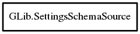

SettingsSchemaSource
Object Hierarchy:

Description:
[ Compact ]
public class SettingsSchemaSource
This is an opaque structure type.
You may not access it directly.
Content:
Static methods:
Creation methods:
Methods:
- public void list_schemas (bool recursive, out string[] non_relocatable, out string[] relocatable)
Lists the schemas in a given source.
- public SettingsSchema? lookup (string schema_id, bool recursive)
Looks up a schema with the identifier schema_id in
this.
- public SettingsSchemaSource @ref ()
Increase the reference count of this
, returning a new reference.
- public void unref ()
Decrease the reference count of this
, possibly freeing it.